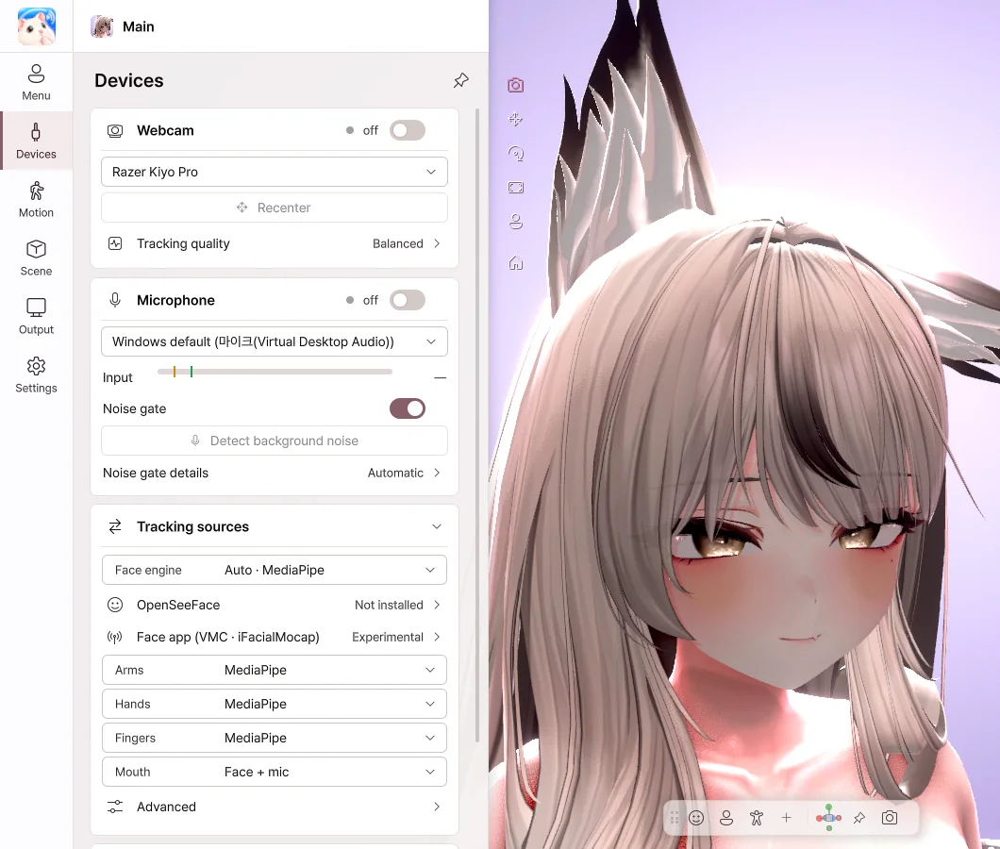
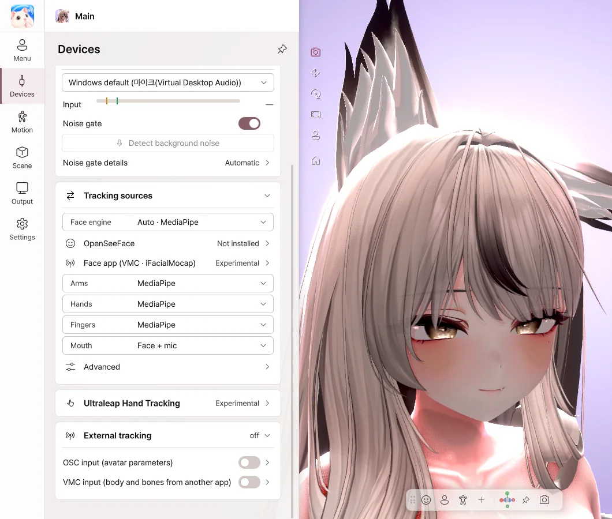

6. Devices
Webcam and microphone

- Turn on the Webcam switch to start face and hand tracking.
- Choose the webcam to use from the camera list.
- Recenter — Takes the direction your face is pointing now as straight ahead.
- Tracking quality — When you use it alongside a game, we recommend Balanced or Eco.
- Turn on the Microphone switch, and the mouth moves when you speak.
- Noise gate — Keeps the mouth still for noise such as keyboard sounds.
- Detect background noise — Click the button while you stay quiet, and the noise level is set automatically.
Tracking sources

- For each part (face, mouth, head, eyes, arms, hands, fingers, body), choose what moves it.
- You can mix Webcam, iPhone, VMC and Ultraleap (hands) part by part. For example, the face can come from your iPhone, the body from full-body trackers and the hands from the webcam.
- Face engine — Choose a webcam engine or a face app (iPhone · VMC). Each device's settings appear under the parts that use it.
- With Mouth set to Face + mic, the mouth follows your voice while you speak and your mouth shape the rest of the time.
- Hand steadiness — Keeps your hands and fingers from jittering while you hold still.
Full body · Finger joints (webcam)
- Set Body to the webcam, and a Full body switch appears. Turn it on, and the avatar follows the torso and legs the camera can see, with Sitting · Standing · Legs tracked · Legs estimated shown beside it.
- When your legs aren't visible, such as at a desk, your shoulder movement alone tilts and turns the upper body. Legs that can't be seen stay in the avatar's pose.
- Set Fingers to the webcam, and a Finger joints switch appears. Turn it on, and the camera follows the bend of each finger joint, the spread of the fingers and the thumb.
Receiving over VMC (full-body trackers · gloves · other apps)
- In the sending app (a full-body tracker app, a glove app, a motion capture app and so on), turn on VMC sending and send to this PC.
- In Tracking sources, set the source to VMC for the parts you want to receive over VMC. Other parts can stay on the webcam · iPhone.
- In VMC settings, check how many bones are being received and that data is coming in.
- If the pose is off, click T-pose or Align. Use Reset to undo it.
- Fingers come through as they are, right down to the rotation of each joint, the spread and the thumb.
- If the input drops while you're receiving arms over VMC, the arms return to the desk (keyboard · mouse) pose.
We've confirmed webcam (including full body and finger joints), iPhone and VMC input with real equipment. We expect the features marked experimental (Ultraleap, OSC and so on) to work properly, but we haven't yet been able to test them with every device and app in the developer's environment. If something goes wrong, please let us know with Settings › Diagnostics › Send an error report.
Face tracking with an iPhone (iFacialMocap · FaceMotion3D)
- Connect your iPhone and PC to the same Wi-Fi.
- In Face engine, choose iFacialMocap or FaceMotion3D as the face app, then Copy the address under This PC's addresses.
- In the iFacialMocap app on your iPhone, go to the gear › Destination IP address and enter that address. In FaceMotion3D, set the app's connection settings to send to this PC's address.
- Turn on the switch, and the expressions from your iPhone appear on the avatar. How the expressions show depends on the avatar's own setup (see How expressions move).
- If it doesn't connect, click Test connection to check whether data is coming in.
You can leave the iPhone address (optional) field empty. Fill it in only if you don't use Destination IP address in the iFacialMocap app.
💡 Turn on Webcam takes over if it drops, and the webcam tracks for you for a while when the iPhone connection drops.